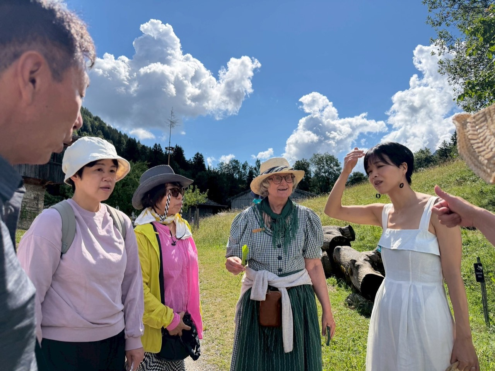
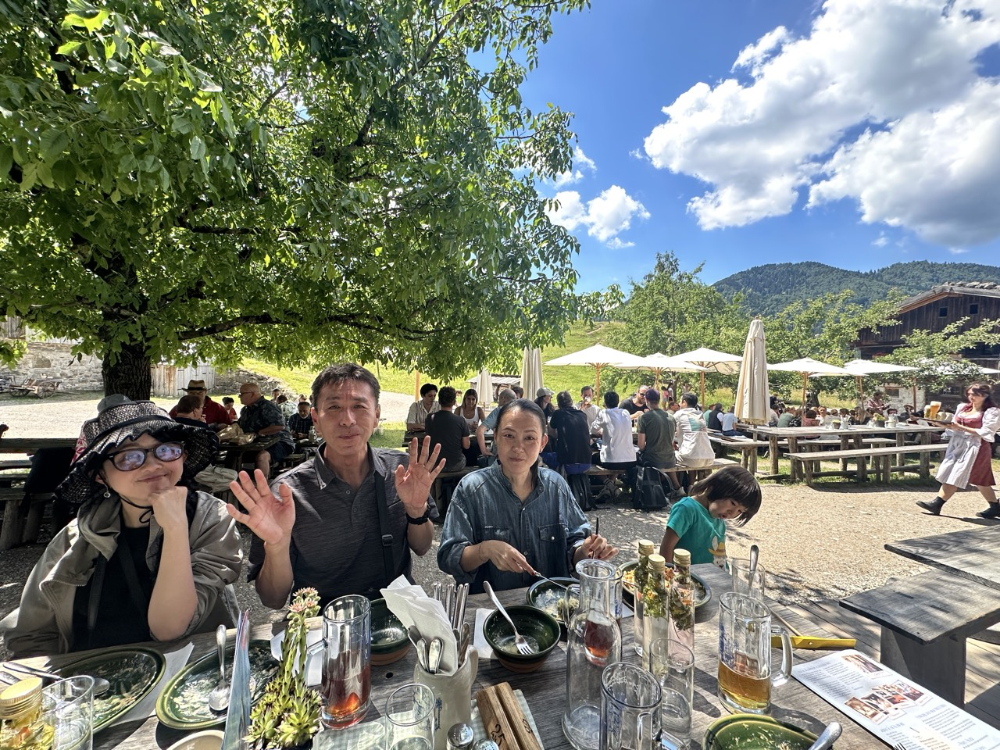
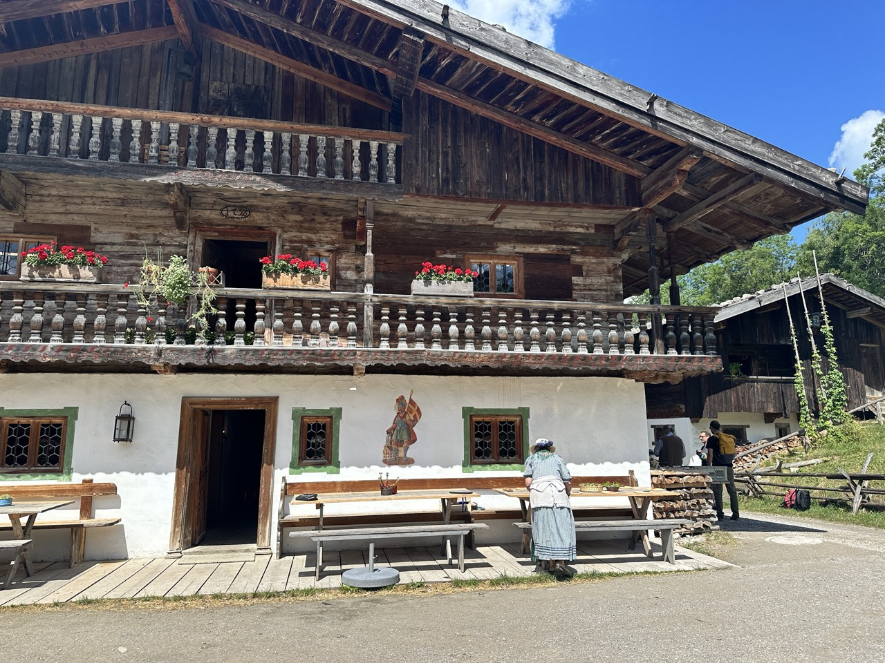
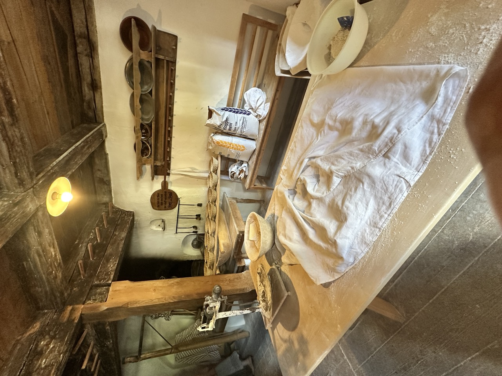
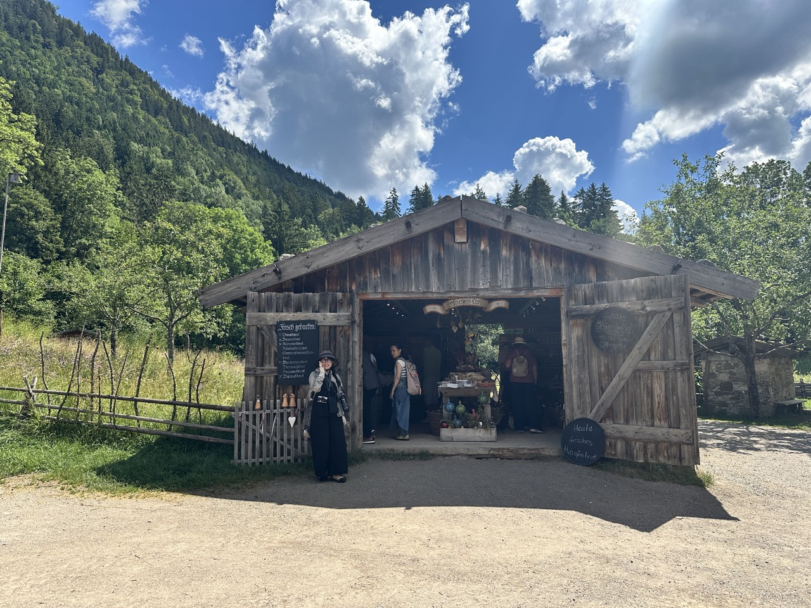
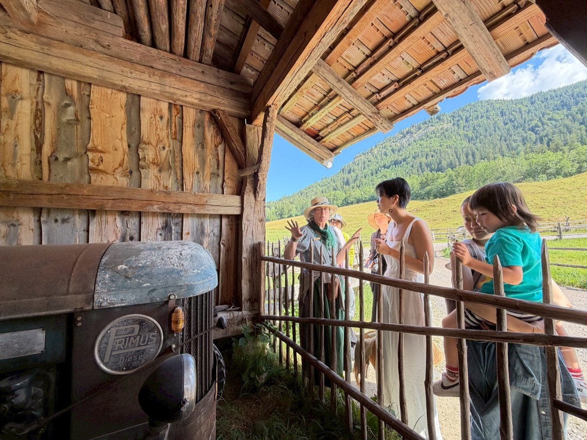
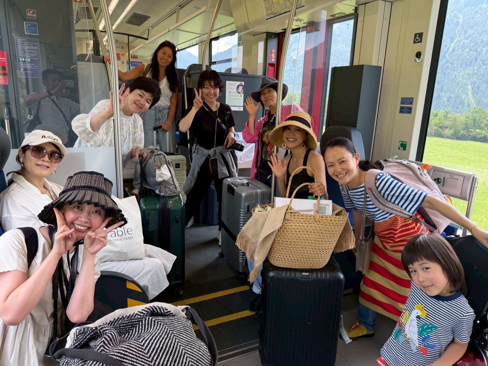
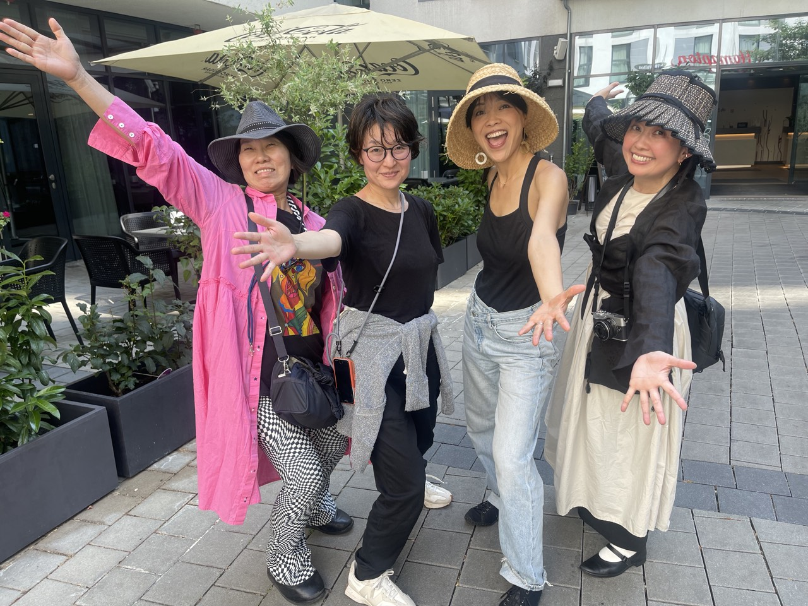
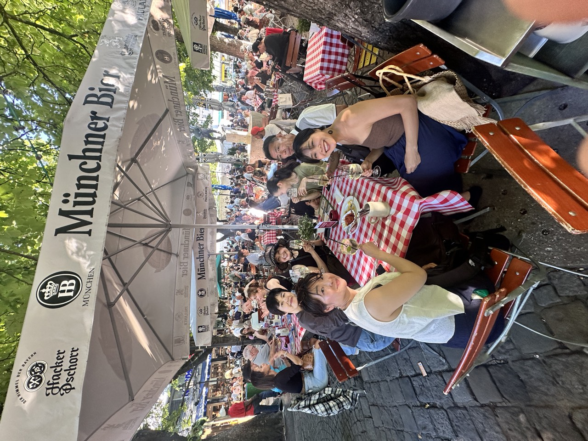
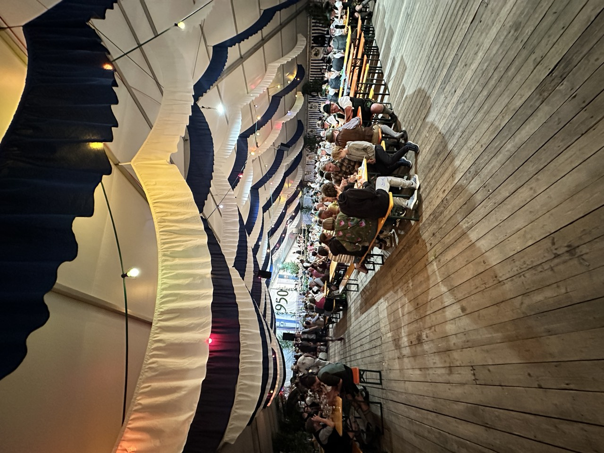

Tannerhof · Bayrischzell · Bayern
来年の夢を、
仲間と育てる一年へ。
その夏を、タナホフで。
28.06 – 03.07.2027オーガニック未来会議 2027
南ドイツ・バイエルン
ヨーロッパアルプスの麓
ビオホテル「タナホフ」
5泊6日・招待制
Tannerhof · Bayrischzell · Bayern
28.06 – 03.07.2027オーガニック未来会議 2027
南ドイツ・バイエルン
ヨーロッパアルプスの麓
ビオホテル「タナホフ」
5泊6日・招待制
ご招待
オーガニック未来会議は、私からお声がけした人だけで集まる、招待制の会です。
「オーガニックが、
あたりまえ。」な社会へ。
そのために、まず私たち自身が、やりたいことを本気で語り合って、応援し合う。
その場所に、あなたをお誘いしたくて、このページをつくりました。


2026年のタナホフ →
未来会議の流れ
夢を語り合い、仲間と作戦会議をする。
2ヶ月に一度の、みんなの合流点です。
来年の夢を見つめる時間を持って、みんなの前で発表します。
最終日に、次の一年の宣言をします。

タナホフで過ごす時間
Morning
2026年の滞在では、毎朝、放牧された牛たちのカウベルの音で目を覚ましました。バルコニーから山を眺めて、一日をはじめました。

Table
食事や飲み物は、ローカル＆オーガニックの食材が中心です。
コスメなどの日用品、タオルやベッドリネンまで、可能なかぎりオーガニックで、倫理的に配慮されたものが使われています。


Pool & Sauna
山を270度ぐるりと眺めながら泳げる、25メートルの屋外プール。サウナも、ジムもあります。
プール、サウナ、ジムは、2027年の宿泊にも含まれます。

Activities
ホテルには、ヨガ、ピラティス、ハイキング、アクアトレーニングなど、日替わりのアクティビティがあります。ヨガなど、ホテルの活動は、2027年も自由参加で使えます。

何もしない時間を選ぶことも、歓迎されています。

Night
2026年の夜は、満天の星に、その日の小さな喜びを感謝しました。
2026年の6日間
山を歩いて、野草を学んで、最後の日はミュンヘンの街へ。2026年は、こんな6日間でした。












なぜ、夏をタナホフで
タナホフがなぜいいのか。言葉にするのは、難しいです。
ここに来た人の中に、人生を変えていった人が、何人もいました。
私自身も、ここに戻り続けることで、人生をよりいい形にできてきました。

最初に四角大輔さんと来た時と比べて、私は本当に成長しました。あの時想像していた人生とは、比べられないほどの自己実現を叶えてきました。
タナホフは、私が「私に戻る」場所です。2026年で、6回目の訪問になりました。
タナホフという場所
タナホフのはじまりは、約100年前。一人の医師が建てた療養所でした。
自然の中で、食事・運動・休息を整える。その考え方は、今もホテルの在り方に受け継がれています。
タナホフには「クナイプ原則」という考え方があり、体も心も魂も、すべてにアプローチする空間があります。

ホテルは、シュタイナー思想にもとづいて設計されています。お客さん同士の交流が生まれ、タナホフを応援する仲間へとつながっていく。
一人で訪れても、同じ思いを持つ人との出会いが生まれる。そんなコミュニティが育つように設計されています。
ホテルの森の木には、ホットスポットがあると、私は感じています。まわりに、結界が張られているような気さえします。
いまは、「公共善経済」のモデル企業としても注目されています。会社の価値を、利益だけではなく、「みんなの幸せにどれだけ貢献したか」で考える経済のあり方です。

2019年まで、日本のサステナブルウェルネス業界で大きな影響力を持つ四角大輔さんと行ってきたビオホテルツアーでも、訪れてきた場所です。
世界中のウェルネスホテルを巡ってきた大輔さんが「世界一」と話していたホテルでもあります。
ここで過ごした仲間の言葉
この場所をいちばんよく表していたのは、2026年に一緒に訪れた仲間たちの言葉でした。
「魂が戻る場所」
「はじめて来たのに、
どこかで来たことがあると
感じる場所」
「ここだけ温かい結界があると
体感できる場所」
2026年のタナホフ・リトリートの参加者の声

2026年の参加者の声
「この旅で、得たもの。
手放したもの。」インタビュー動画から、ご本人の言葉のまま
文字にしました（言いよどみだけ整えています）。
お名前は伏せています。
仕事の自分ではなく、
素の自分でいられた。
普段は仕事の自分で
人と関わるけれど、
ここでは本当に素の自分で、
いろんなお話ができました。
会社をやっているとか関係なく、
私自身がどう過ごしたいか、
どういたいかを、
すごく尊重される場だったので、
むちゃくちゃ居心地が良かったです。
手放したのは、
仮面をかぶっている自分や、
「こうあるべき」。
自分そのものでいいんだなって。
ここに来る直前にも、
日本でちょうど
そういうことを考えていて、
まさにそういう時間に
なりました。
― 2026年の参加者
もっと自由に生きていいんだ、
もっと楽しんでいいんだ。
普段は、家のことや仕事に
追われることが
すごく多かったので、
そこから一度自分を切り離して、
自分とすごく
向き合うことができました。
こういうことに引っかかるんだ、
なんで嫌なんだろう、まで
考える時間が持てたのが、
とても良かったです。
自然ってこんなに大きいんだ、
自分ってこんなに
自由でいいんだ。
もっと広い視点で、
もっと自由に生きていいんだ、
もっと楽しんでいいんだって
気が付いて、
「しなければならない」を
少し手放せたかなと思います。
― 2026年の参加者
もうすでに豊かさがあって、
その上で、
自分がどう生きるか。
日本にいると、
何かをしなきゃいけない、
何かを頑張らないと
幸せや豊かさに
たどり着けない、
という感覚が
どうしてもあるんです。
でも実はそうじゃなくて、
もうすでに豊かさがあって、
その上で自分がどう生きるか。
この素晴らしい環境と
自然の中に身を置いて、
そう思いました。
自然を守っていきたい、
地球を守っていきたい。
それを皆さんと一緒に
叶えていきたいし、
こういう仲間がどんどん増えて、
つながっていくことを
期待しています。
― 2026年の参加者

初めて会ったとは
思えないぐらい、
濃厚で楽しい時間。
初めてのビオホテル体験で、
まず大切な仲間に出会えました。
初めて会ったとは
思えないぐらい、
すごく濃厚で楽しい時間を
過ごさせてもらって、
すぐに打ち解けて
仲良くなれたのが、
本当に最大の得たものです。
知らないうちに
背負っていたものと向き合えて、
つらかった、苦しかったのが、
少し和らいだような気がします。
― 2026年の参加者
「ねばねば星人」を、
手放しました。
「〜ねばならない」の、
ねばねば星人を手放しました。
得たのは、案外、
自分の人生も残り少ないなと
気づかせてもらったこと。
これからは、
自分が選択したもので
生きていきたいなと思いました。
自分も、伝統を伝えられる
日本の人になりたいなと
決めました。
― 2026年の参加者

心が落ち着いていれば、
怖さや不安はなくなる。
目的にしていた「整う」を、
楽しみながらできて、
また明日から頑張ろうという
気持ちにとてもなれる
ツアーでした。
手放したのは、
いろんな面での恐怖心。
心が落ち着いていれば、
怖いとか不安だとかいう
気持ちがなくなるな、
という気持ちに
させていただきました。
アクティビティもそろっていて、
食事も健康になるような食事で、
とても楽しい旅でした。
― 2026年の参加者
この先、何をするにも
基盤になるものが
得られた。
見たものと、自分の体と、
自分の実現とのつながりを
感じることができたのが
一番です。
いつもとは違う土地で、
暮らすように泊まれた。
その貴重な体験で、
私にとって今後、
何をするにも
基盤となる、基礎となるものが
得られたんじゃないかなと
思います。
本当に自分がどう生きるかが、
ものすごく大切だと
思っています。
― 2026年の参加者
Instagramから
旅から帰ってすぐに、私のInstagramで、仲間と過ごした時間と、そこで決めた来年からのことを書きました。
2027年のこと
本ツアーは、海外施設（ドイツ・ホテルなど）との連携により実施されます。そのため、時差や現地ホテル側のキャンセル規定をふまえ、以下のポリシーを適用いたします。
お申し込み時に、お席確保代（デポジット）として€500をお支払いいただきます。お席確保代は、以下の費用に充当されます。
お席確保代€500のうち、返金の対象となるのは最大€150のみとなります。
お申し込み確定後にキャンセルされる場合、以下のキャンセル料が適用されます。
| キャンセル日（旅行開始日からの起算） | キャンセル料 |
|---|---|
| 60日前まで | €150を返金（お席確保代のうち€350は返金不可） |
| 59〜45日前 | 参加費の30％ |
| 44〜31日前 | 参加費の50％ |
| 30〜15日前 | 参加費の80％ |
| 14日前以降 | 参加費の100％ |
| 当日・無連絡 | 参加費の100％ |
※参加費には、お席確保代€500を含みます。
お客様都合による途中参加、途中離脱・早期帰国などによる未使用分の返金はございません。※現地ホテル・サービス提供者も返金不可のため。
レムケの急病、不可抗力などにより実施が困難となり、IOBが催行を中止した場合は、お支払いいただいた参加費を全額返金いたします。※ただし、お客様が個人で手配された航空券・交通費・宿泊費などは補償対象外となります。
理由の如何にかかわらず、上記キャンセル料が適用されます。※海外旅行キャンセル保険の加入を推奨いたします。
ホテルや現地施設のキャンセル規定は、IOBが契約当事者となります。そのため、IOBが費用を立て替えることのないよう、本ポリシーを設定しています。ご自身で手配される航空券・交通手段・保険については、お客様のご負担となります。
お申し込み
お申し込み内容を受け付けました。
振込先をご案内するメールを、ご入力いただいたアドレスへお送りしました。お振込みについては、メールに記載された内容をご確認ください。
メールが届かない場合は、迷惑メールのフォルダもご確認ください。
恐れ入ります。
あと一手間だけお願いします。
ただいま自動の送信が使えない状態です。下のボタンを押すと、入力した内容が入ったメールが開きます。そのまま送信していただければ、お申し込みを受け付けます。
メールでお申し込みを送るお問い合わせ：school@iob.bio
2026年のタナホフ


これまでのツアーから
同じ食卓を囲んで、山を歩いて、夜は星を見ながら、これからやりたいことを本気で語り合う。
自然の中にいると、人と人の距離って、こんなに早くほどけていくんだなと、いつも思います。
お申し込みはこちら2018


2019